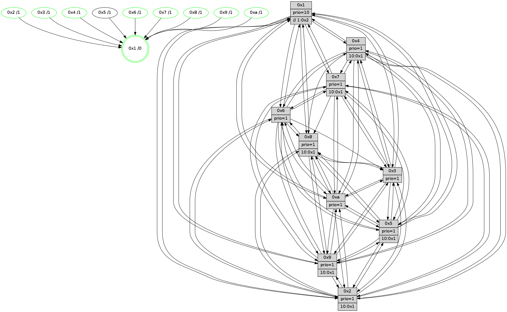

>> << IDX [start] -100 -25 -5 +0 +5 +25 +100 [1190.50635195]
 Previous packets
1185.009420 beacon03(faad) #0 coord=01,02,03,04,05,06,07,0a,09,08 cycle=688.0ms assoc 64 1f 28
1185.019422 beacon04(faad) #0 coord=01,02,03,04,05,06,07,0a,09,08 cycle=688.0ms assoc 64 68 c2
1185.029419 beacon05(faad) #0 coord=01,02,03,04,05,06,07,0a,09,08 cycle=688.0ms assoc 64 12 8f
1185.039419 beacon06(faad) #0 coord=01,02,03,04,05,06,07,0a,09,08 cycle=688.0ms assoc 64 9c 58
1185.049421 beacon07(faad) #0 coord=01,02,03,04,05,06,07,0a,09,08 cycle=688.0ms assoc 64 e6 15
1185.059427 beacon0a(faad) #0 coord=01,02,03,04,05,06,07,0a,09,08 cycle=688.0ms assoc 64 97 1e
1185.069424 beacon09(faad) #0 coord=01,02,03,04,05,06,07,0a,09,08 cycle=688.0ms assoc 64 19 c9
1185.079425 beacon08(faad) #0 coord=01,02,03,04,05,06,07,0a,09,08 cycle=688.0ms assoc 64 63 84
1185.091930 [Hello(10): seq=689 sym=6,2,3,8,7,5,9,4,1 sysInfo=hasWarning stat=6:3,4,0,0/2:3,0,3,10/3:7,0,8,11/8:2,0,13,2/7:2,3,5,6/5:0,13,14,14/9:1,9,5,3/4:10,2,5,0/1:4,5,10,1]
1185.100187 [Color(7) seq=302 @0:0 prio=1 >10.@1,1.@2,1.@3,1.@4]
1185.107401 [Hello(8): seq=700 sym=5,2,3,4,9,6,7,10,1 sysInfo=hasWarning stat=5:4,2,7,0/2:14,15,4,10/3:7,5,8,0/4:0,8,9,10/9:6,11,9,3/6:7,2,5,13/7:1,5,4,0/10:14,8,12,4/1:3,0,0,0]
1185.110854 [Color(8) seq=355 @0:0 prio=1 >10.@1,1.@2,1.@3,1.@4]
1185.115499 [Color(4) seq=313 @0:0 prio=1 >10.@1,1.@2,1.@3,1.@5]
----------------------------------------------------------------------
1185.777567 beacon01(faad) #0 coord=01,02,03,04,05,06,07,0a,09,08 cycle=688.0ms assoc
-- color-indic=1 64 32 5a
1185.787551 beacon02(faad) #0 coord=01,02,03,04,05,06,07,0a,09,08 cycle=688.0ms assoc 64 a1 6b
1185.797550 beacon03(faad) #0 coord=01,02,03,04,05,06,07,0a,09,08 cycle=688.0ms assoc 64 db 26
1185.807551 beacon04(faad) #0 coord=01,02,03,04,05,06,07,0a,09,08 cycle=688.0ms assoc 64 ac cc
1185.817550 beacon05(faad) #0 coord=01,02,03,04,05,06,07,0a,09,08 cycle=688.0ms assoc 64 d6 81
1185.827550 beacon06(faad) #0 coord=01,02,03,04,05,06,07,0a,09,08 cycle=688.0ms assoc 64 58 56
1185.837550 beacon07(faad) #0 coord=01,02,03,04,05,06,07,0a,09,08 cycle=688.0ms assoc 64 22 1b
1185.847555 beacon0a(faad) #0 coord=01,02,03,04,05,06,07,0a,09,08 cycle=688.0ms assoc 64 53 10
1185.857557 beacon09(faad) #0 coord=01,02,03,04,05,06,07,0a,09,08 cycle=688.0ms assoc 64 dd c7
1185.867555 beacon08(faad) #0 coord=01,02,03,04,05,06,07,0a,09,08 cycle=688.0ms assoc 64 a7 8a
1185.878479 [Hello(1): seq=666 sym=2,9,5,10,3,8,6,7 sysInfo=coloring-mode-on,ColoringModeRequestCalled stat=2:1,2,6,2/9:1,3,0,0/5:10,8,15,7/10:11,12,12,6/3:5,7,1,7/8:8,6,0,3/6:2,7,7,13/7:9,9,2,14]
1185.881424 [Hello(5): seq=757 sym=7,6,4,3,1,9,8,10,2 sysInfo=hasWarning stat=7:11,7,10,13/6:12,0,10,2/4:10,15,2,13/3:15,11,3,14/1:1,1,0,0/9:15,11,2,9/8:8,9,14,2/10:3,7,1,8/2:10,14,3,6]
1185.885108 [Hello(2): seq=753 sym=4,5,7,6,3,9,8,10,1 sysInfo=hasWarning stat=4:12,2,8,11/5:15,11,13,0/7:6,13,9,14/6:12,4,12,11/3:2,1,13,9/9:2,4,1,7/8:15,15,7,11/10:0,8,2,10/1:8,3,12,0]
1185.887914 [Color(2) seq=333 @0:0 prio=1 >10.@1,1.@3,1.@4,1.@5]
1185.889726 [Hello(3): seq=757 sym=1,7,6,2,4,8,9,10,5 sysInfo=hasWarning stat=1:2,0,14,0/7:6,0,15,12/6:7,0,1,0/2:7,12,2,0/4:14,13,2,11/8:1,12,12,4/9:11,2,5,14/10:8,7,13,4/5:14,0,9,15]
1185.893159 [Color(6) seq=389 @0:0 prio=1]
1185.894655 [Color(10) seq=346 @0:0 prio=1]
1185.902075 [Color(3) seq=386 @0:0 prio=1]
----------------------------------------------------------------------
1186.565698 beacon01(faad) #0 coord=01,02,03,04,05,06,07,0a,09,08 cycle=688.0ms assoc
-- color-indic=1 64 8e 5f
1186.575680 beacon02(faad) #0 coord=01,02,03,04,05,06,07,0a,09,08 cycle=688.0ms assoc 64 1d 6e
1186.585680 beacon03(faad) #0 coord=01,02,03,04,05,06,07,0a,09,08 cycle=688.0ms assoc 64 67 23
1186.595681 beacon04(faad) #0 coord=01,02,03,04,05,06,07,0a,09,08 cycle=688.0ms assoc 64 10 c9
1186.605682 beacon05(faad) #0 coord=01,02,03,04,05,06,07,0a,09,08 cycle=688.0ms assoc 64 6a 84
1186.615681 beacon06(faad) #0 coord=01,02,03,04,05,06,07,0a,09,08 cycle=688.0ms assoc 64 e4 53
1186.625681 beacon07(faad) #0 coord=01,02,03,04,05,06,07,0a,09,08 cycle=688.0ms assoc 64 9e 1e
1186.635686 beacon0a(faad) #0 coord=01,02,03,04,05,06,07,0a,09,08 cycle=688.0ms assoc 64 ef 15
1186.645687 beacon09(faad) #0 coord=01,02,03,04,05,06,07,0a,09,08 cycle=688.0ms assoc 64 61 c2
1186.655686 beacon08(faad) #0 coord=01,02,03,04,05,06,07,0a,09,08 cycle=688.0ms assoc 64 1b 8f
1186.668179 [Hello(10): seq=690 sym=6,2,3,8,7,5,9,4,1 sysInfo=hasWarning stat=6:3,4,0,0/2:3,0,3,10/3:7,1,8,11/8:3,1,13,2/7:3,4,5,6/5:1,13,14,14/9:1,9,5,3/4:10,3,5,0/1:5,6,10,1]
1186.671225 [Hello(7): seq=757 sym=2,3,5,6,4,8,9,10,1 sysInfo=hasWarning stat=2:4,9,12,1/3:10,2,13,0/5:12,11,8,1/6:8,6,8,9/4:8,7,6,1/8:5,7,0,0/9:1,4,0,0/10:2,8,13,5/1:5,15,1,0]
1186.674386 [Color(7) seq=303 @0:0 prio=1 >10.@1,1.@2,1.@3,1.@4]
1186.676144 [Color(1) seq=438 @0:0 prio=10 >>1.@2,1.@3,1.@4]
1186.678041 [Color(8) seq=356 @0:0 prio=1 >10.@1,1.@2,1.@3,1.@4]
1186.684407 [Color(9) seq=330 @0:0 prio=1 >10.@1,1.@2,1.@3,1.@4]
1186.688193 [Color(4) seq=314 @0:0 prio=1 >10.@1,1.@2,1.@3,1.@5]
----------------------------------------------------------------------
1187.353829 beacon01(faad) #0 coord=01,02,03,04,05,06,07,0a,09,08 cycle=688.0ms assoc
-- color-indic=1 64 ba 47
1187.363812 beacon02(faad) #0 coord=01,02,03,04,05,06,07,0a,09,08 cycle=688.0ms assoc 64 29 76
1187.373811 beacon03(faad) #0 coord=01,02,03,04,05,06,07,0a,09,08 cycle=688.0ms assoc 64 53 3b
1187.383812 beacon04(faad) #0 coord=01,02,03,04,05,06,07,0a,09,08 cycle=688.0ms assoc 64 24 d1
1187.393811 beacon05(faad) #0 coord=01,02,03,04,05,06,07,0a,09,08 cycle=688.0ms assoc 64 5e 9c
1187.403811 beacon06(faad) #0 coord=01,02,03,04,05,06,07,0a,09,08 cycle=688.0ms assoc 64 d0 4b
1187.413812 beacon07(faad) #0 coord=01,02,03,04,05,06,07,0a,09,08 cycle=688.0ms assoc 64 aa 06
1187.423816 beacon0a(faad) #0 coord=01,02,03,04,05,06,07,0a,09,08 cycle=688.0ms assoc 64 db 0d
1187.433818 beacon09(faad) #0 coord=01,02,03,04,05,06,07,0a,09,08 cycle=688.0ms assoc 64 55 da
1187.443819 beacon08(faad) #0 coord=01,02,03,04,05,06,07,0a,09,08 cycle=688.0ms assoc 64 2f 97
1187.455606 [Hello(5): seq=758 sym=7,6,4,3,1,9,8,10,2 sysInfo=hasWarning stat=7:11,8,10,13/6:12,1,10,2/4:10,0,2,13/3:0,12,3,14/1:1,2,0,0/9:0,12,2,9/8:9,10,14,2/10:4,8,1,8/2:11,15,3,6]
1187.459301 [Color(10) seq=347 @0:0 prio=1]
1187.460763 [Hello(3): seq=758 sym=1,7,2,4,8,9,10,5 sysInfo=hasWarning stat=1:3,1,14,0/7:6,1,15,12/2:7,12,2,0/4:14,14,2,11/8:2,13,12,4/9:12,3,5,14/10:9,7,13,4/5:15,0,9,15]
1187.463660 [Hello(2): seq=754 sym=4,5,7,6,3,9,8,10,1 sysInfo=hasWarning stat=4:13,3,8,11/5:0,11,13,0/7:7,14,9,14/6:12,5,12,11/3:3,2,13,9/9:2,5,1,7/8:15,0,7,11/10:1,9,2,10/1:9,4,12,0]
1187.466535 [Hello(6): seq=758 sym=2,3,5,4,7,9,8,10,1 sysInfo=hasWarning stat=2:3,5,0,0/3:15,13,0,12/5:15,2,2,1/4:0,7,13,5/7:5,0,8,12/9:0,10,6,8/8:6,5,1,5/10:15,7,5,12/1:8,0,0,1]
1187.469009 [Color(3) seq=387 @0:0 prio=1]
1187.470476 [Color(6) seq=390 @0:0 prio=1]
1187.476351 [Hello(1): seq=667 sym=2,9,5,10,3,8,6,7 sysInfo=coloring-mode-on,ColoringModeRequestCalled stat=2:2,3,6,2/9:2,4,0,0/5:11,8,15,7/10:12,13,12,6/3:6,8,1,7/8:8,7,0,3/6:2,8,7,13/7:9,9,2,14]
1187.479184 [Color(2) seq=334 @0:0 prio=1 >10.@1,1.@3,1.@4,1.@5]
1187.482056 [STC(1) #0.186 tree-change,inconsistent-stability,stable,to-color d=0]
----------------------------------------------------------------------
1188.141960 beacon01(faad) #0 coord=01,02,03,04,05,06,07,0a,09,08 cycle=688.0ms assoc
-- color-indic=1 64 06 42
1188.151941 beacon02(faad) #0 coord=01,02,03,04,05,06,07,0a,09,08 cycle=688.0ms assoc 64 95 73
1188.161941 beacon03(faad) #0 coord=01,02,03,04,05,06,07,0a,09,08 cycle=688.0ms assoc 64 ef 3e
1188.171943 beacon04(faad) #0 coord=01,02,03,04,05,06,07,0a,09,08 cycle=688.0ms assoc 64 98 d4
1188.181942 beacon05(faad) #0 coord=01,02,03,04,05,06,07,0a,09,08 cycle=688.0ms assoc 64 e2 99
1188.191943 beacon06(faad) #0 coord=01,02,03,04,05,06,07,0a,09,08 cycle=688.0ms assoc 64 6c 4e
1188.201944 beacon07(faad) #0 coord=01,02,03,04,05,06,07,0a,09,08 cycle=688.0ms assoc 64 16 03
1188.211947 beacon0a(faad) #0 coord=01,02,03,04,05,06,07,0a,09,08 cycle=688.0ms assoc 64 67 08
1188.221947 beacon09(faad) #0 coord=01,02,03,04,05,06,07,0a,09,08 cycle=688.0ms assoc 64 e9 df
1188.231948 beacon08(faad) #0 coord=01,02,03,04,05,06,07,0a,09,08 cycle=688.0ms assoc 64 93 92
1188.243519 [STC(6)->1 #0.186 tree-change,inconsistent-stability,stable,to-color d=1]
1188.245157 [Hello(10): seq=691 sym=6,2,3,8,7,5,9,4,1 sysInfo=hasWarning stat=6:4,5,0,0/2:4,1,3,10/3:8,2,8,11/8:3,2,13,2/7:4,5,5,6/5:2,13,14,14/9:1,10,5,3/4:11,4,5,0/1:6,7,11,1]
1188.248204 [Hello(8): seq=702 sym=5,2,3,4,9,6,7,10,1 sysInfo=hasWarning stat=5:6,2,7,0/2:15,1,4,10/3:9,7,8,0/4:0,10,9,10/9:7,12,9,3/6:9,4,5,13/7:1,5,4,0/10:0,10,12,4/1:5,0,1,0]
1188.250882 [Hello(9): seq=702 sym=2,5,3,7,6,8,10,1 sysInfo=hasWarning stat=2:6,5,14,8/5:15,12,15,5/3:8,14,5,0/7:5,7,4,1/6:5,11,11,11/8:2,12,0,3/10:12,9,5,4/1:2,9,4,1]
1188.253228 [STC(10)->1 #0.186 tree-change,inconsistent-stability,stable,to-color d=1]
1188.254671 [STC(9)->1 #0.186 tree-change,inconsistent-stability,stable,to-color d=1]
1188.256948 [Color(9) seq=331 @0:0 prio=1 >10.@1,1.@2,1.@3,1.@4]
1188.258690 [STC(3)->1 #0.186 tree-change,inconsistent-stability,stable,to-color d=1]
1188.260370 [STC(5)->1 #0.186 to-color d=1]
1188.261850 [Hello(7): seq=758 sym=2,3,5,6,4,8,9,10,1 sysInfo=hasWarning stat=2:5,10,12,1/3:11,3,13,0/5:13,11,8,1/6:9,7,8,9/4:9,8,6,1/8:5,8,0,0/9:1,5,0,0/10:3,9,13,5/1:6,0,2,0]
1188.270544 [STC(7)->1 #0.186 tree-change,inconsistent-stability,stable,to-color d=1]
1188.272168 [Color(7) seq=304 @0:0 prio=1 >10.@1,1.@2,1.@3,1.@4]
1188.273978 [STC(8)->1 #0.186 tree-change,inconsistent-stability,stable,to-color d=1]
1188.275298 [Hello(4): seq=758 sym=5,7,6,2,3,9,8,10,1 sysInfo= stat=5:12,7,1,15/7:2,3,6,1/6:0,0,2,12/2:2,3,12,14/3:13,12,5,12/9:8,4,8,11/8:3,12,1,6/10:14,8,12,13/1:13,6,3,1]
1188.279249 [Color(8) seq=357 @0:0 prio=1 >10.@1,1.@2,1.@3,1.@4]
1188.284334 [STC(4)->1 #0.186 tree-change,inconsistent-stability,stable,to-color d=1]
1188.285970 [Color(4) seq=315 @0:0 prio=1 >10.@1,1.@2,1.@3,1.@5]
----------------------------------------------------------------------
1188.930091 beacon01(faad) #0 coord=01,02,03,04,05,06,07,0a,09,08 cycle=688.0ms assoc
-- color-indic=1 64 c2 4c
1188.940073 beacon02(faad) #0 coord=01,02,03,04,05,06,07,0a,09,08 cycle=688.0ms assoc 64 51 7d
1188.950072 beacon03(faad) #0 coord=01,02,03,04,05,06,07,0a,09,08 cycle=688.0ms assoc 64 2b 30
1188.960075 beacon04(faad) #0 coord=01,02,03,04,05,06,07,0a,09,08 cycle=688.0ms assoc 64 5c da
1188.970075 beacon05(faad) #0 coord=01,02,03,04,05,06,07,0a,09,08 cycle=688.0ms assoc 64 26 97
1188.980074 beacon06(faad) #0 coord=01,02,03,04,05,06,07,0a,09,08 cycle=688.0ms assoc 64 a8 40
1188.990074 beacon07(faad) #0 coord=01,02,03,04,05,06,07,0a,09,08 cycle=688.0ms assoc 64 d2 0d
1189.000079 beacon0a(faad) #0 coord=01,02,03,04,05,06,07,0a,09,08 cycle=688.0ms assoc 64 a3 06
1189.020079 beacon08(faad) #0 coord=01,02,03,04,05,06,07,0a,09,08 cycle=688.0ms assoc 64 57 9c
1189.031857 [Hello(5): seq=759 sym=7,6,4,3,1,9,8,10,2 sysInfo=hasWarning stat=7:12,9,11,13/6:13,2,10,2/4:11,1,3,13/3:1,13,3,14/1:2,2,1,0/9:0,12,2,9/8:9,11,15,2/10:4,9,1,8/2:12,0,4,6]
1189.035927 [Hello(2): seq=755 sym=4,5,7,6,3,9,8,10,1 sysInfo=hasWarning stat=4:14,4,9,11/5:1,11,13,0/7:7,15,10,14/6:12,5,12,11/3:3,2,13,9/9:2,5,1,7/8:15,1,8,11/10:1,9,2,10/1:9,4,13,0]
1189.038766 [Color(2) seq=335 @0:0 prio=1 >10.@1,1.@3,1.@4,1.@5]
1189.041205 [Hello(1): seq=668 sym=4,2,9,5,10,3,8,6,7 sysInfo=coloring-mode-on,ColoringModeRequestCalled stat=4:0,1,1,0/2:2,3,6,2/9:2,4,0,0/5:11,8,0,7/10:13,13,12,6/3:6,8,1,7/8:8,8,1,3/6:2,8,8,14/7:10,10,3,14]
1189.044596 [Hello(3): seq=759 sym=1,7,2,4,8,9,10,5 sysInfo=hasWarning stat=1:4,1,15,0/7:7,2,0,12/2:7,13,3,0/4:15,15,3,11/8:2,14,13,4/9:12,3,5,14/10:9,7,13,4/5:0,0,10,15]
1189.047917 [Hello(6): seq=759 sym=2,3,5,4,7,9,8,10,1 sysInfo=hasWarning stat=2:3,6,0,0/3:15,14,0,12/5:0,2,2,1/4:1,8,14,5/7:5,1,9,12/9:0,10,6,8/8:6,6,2,5/10:15,7,5,12/1:9,0,1,1]
1189.050612 [Color(3) seq=388 @0:0 prio=1]
1189.054081 [Color(6) seq=391 @0:0 prio=1]
1189.056128 [Color(10) seq=348 @0:0 prio=1]
----------------------------------------------------------------------
1189.718222 beacon01(faad) #0 coord=01,02,03,04,05,06,07,0a,09,08 cycle=688.0ms assoc
-- color-indic=1 64 7e 49
1189.728204 beacon02(faad) #0 coord=01,02,03,04,05,06,07,0a,09,08 cycle=688.0ms assoc 64 ed 78
1189.738204 beacon03(faad) #0 coord=01,02,03,04,05,06,07,0a,09,08 cycle=688.0ms assoc 64 97 35
1189.748205 beacon04(faad) #0 coord=01,02,03,04,05,06,07,0a,09,08 cycle=688.0ms assoc 64 e0 df
1189.758205 beacon05(faad) #0 coord=01,02,03,04,05,06,07,0a,09,08 cycle=688.0ms assoc 64 9a 92
1189.768205 beacon06(faad) #0 coord=01,02,03,04,05,06,07,0a,09,08 cycle=688.0ms assoc 64 14 45
1189.778207 beacon07(faad) #0 coord=01,02,03,04,05,06,07,0a,09,08 cycle=688.0ms assoc 64 6e 08
1189.788211 beacon0a(faad) #0 coord=01,02,03,04,05,06,07,0a,09,08 cycle=688.0ms assoc 64 1f 03
1189.798210 beacon09(faad) #0 coord=01,02,03,04,05,06,07,0a,09,08 cycle=688.0ms assoc 64 91 d4
1189.808212 beacon08(faad) #0 coord=01,02,03,04,05,06,07,0a,09,08 cycle=688.0ms assoc 64 eb 99
1189.821340 [Hello(10): seq=692 sym=6,2,3,8,7,5,9,4,1 sysInfo=hasWarning stat=6:4,5,0,1/2:4,1,3,10/3:8,2,9,11/8:3,3,14,2/7:5,6,6,6/5:3,13,15,14/9:1,11,6,3/4:12,5,6,0/1:6,7,11,1]
1189.824384 [Hello(8): seq=703 sym=5,2,3,9,6,10,1 sysInfo=hasWarning stat=5:7,2,7,0/2:0,2,4,10/3:10,8,8,0/9:7,12,9,3/6:10,5,6,13/10:1,11,12,4/1:6,0,1,0]
1189.827075 [Hello(7): seq=759 sym=2,3,5,6,4,8,9,10,1 sysInfo=hasWarning stat=2:6,11,12,1/3:12,4,13,0/5:14,11,8,1/6:10,8,9,9/4:10,9,7,1/8:5,9,1,0/9:1,5,0,0/10:4,10,13,5/1:7,0,2,0]
1189.829944 [Color(1) seq=440 @0:0 prio=10 >>1.@2,1.@3,1.@4]
1189.834070 [Hello(9): seq=703 sym=2,5,3,4,7,6,8,10,1 sysInfo=hasWarning stat=2:7,6,15,8/5:0,12,0,5/3:9,15,6,0/4:0,1,1,0/7:6,8,5,1/6:6,12,12,11/8:2,13,1,3/10:13,10,5,4/1:3,9,4,1]
1189.838505 [Color(9) seq=332 @0:0 prio=1 >10.@1,1.@2,1.@3,1.@4]
1189.844592 [Color(4) seq=316 @0:0 prio=1 >10.@1,1.@2,1.@3,1.@5]
1189.849480 [Color(7) seq=305 @0:0 prio=1 >10.@1,1.@2,1.@3,1.@4]